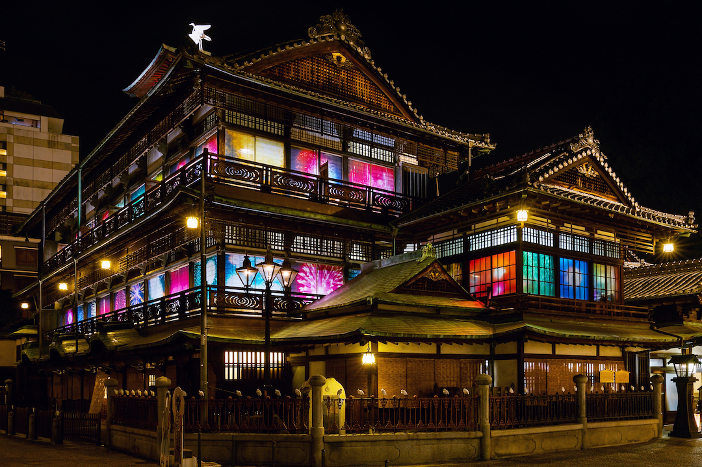
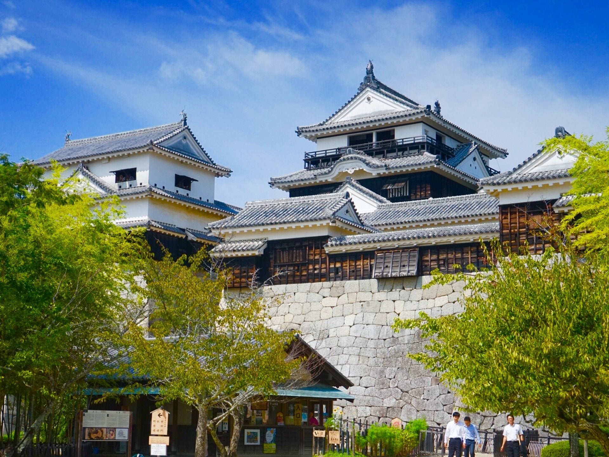
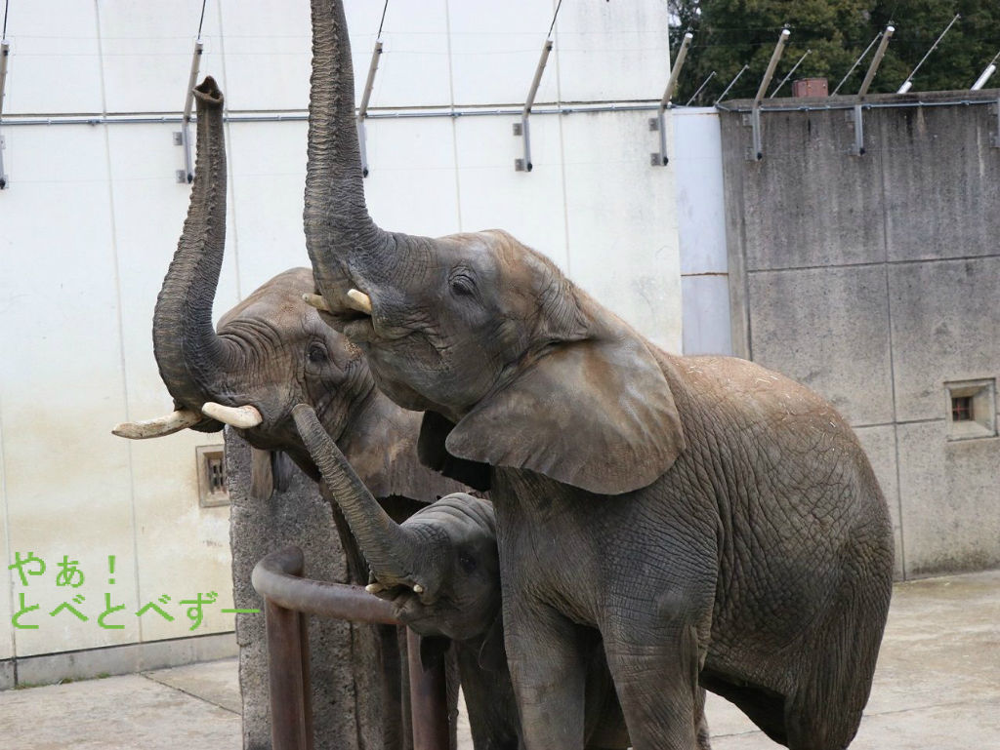
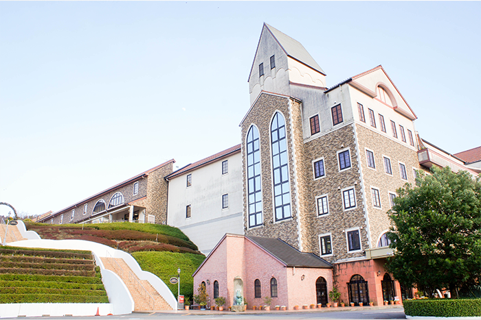
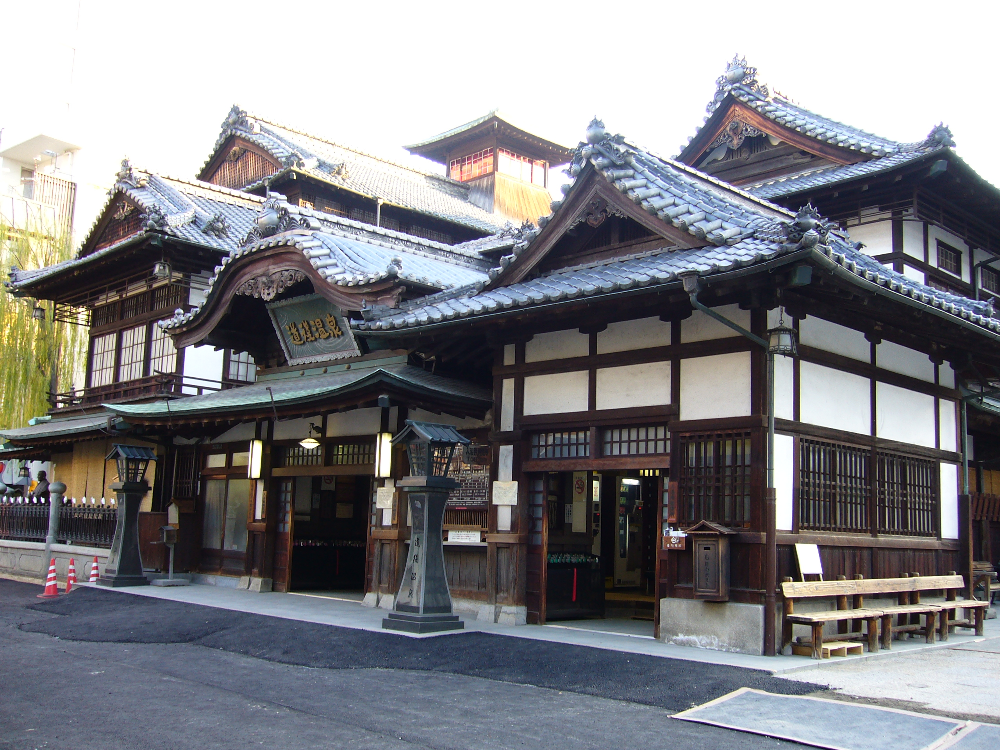
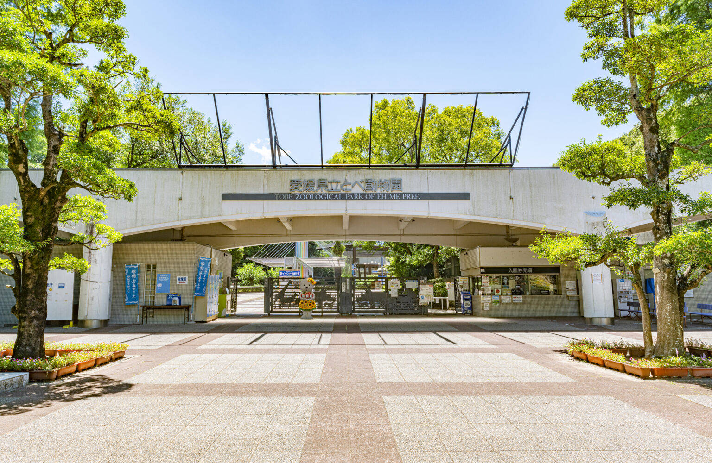
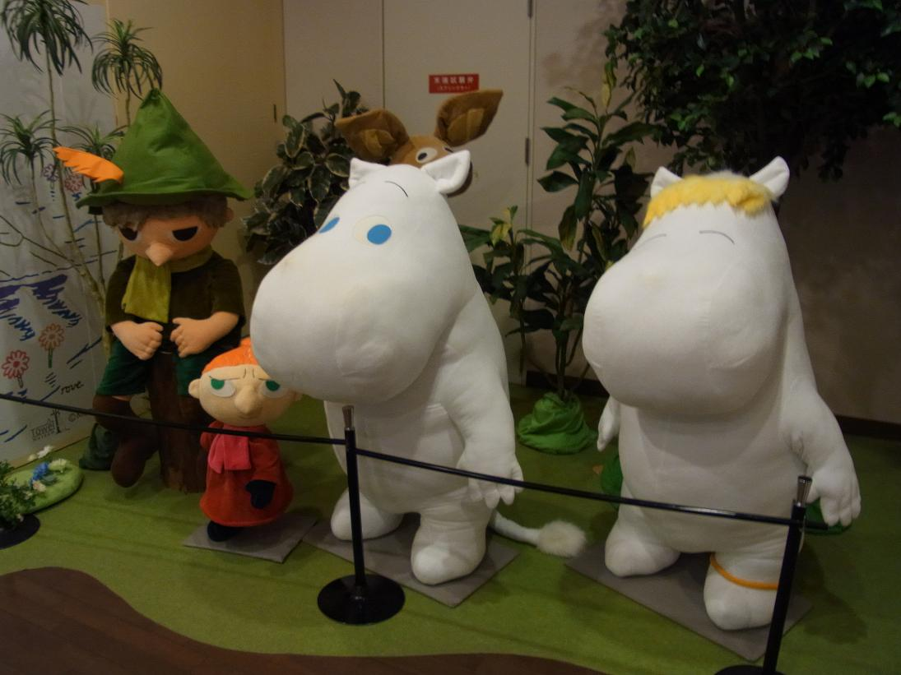

愛媛のおすすめ観光スポット




こんにちは、一般愛媛県民Kです。話には聞いたことはあるけど実際、愛媛県ってなにがあるの？という声をよく耳にします。
そこで今回は、私が独断と偏見で選んだ愛媛県のおすすめの観光スポットを4つご紹介します。
1、道後温泉
道後温泉本館は、日本最古といわれる道後温泉のシンボルで、「神の湯」に代表される温泉施設です。平成21年(2009)に発行されたミシュラン・グリーンガイド・ジャポンでは、最高位の三つ星を獲得しています。夏目漱石の小説「坊っちゃん」の舞台としても有名でしょう。
温泉以外にも砥部焼の陶板壁画など、目で楽しめる要素もあります 。
また、近くには「道後ハイカラ通り」の愛称で親しまれている温泉地ならではの明治ロマンを感じる商店街もあるため、で買い物も楽しめます！

2,松山城>
松山城は、松山市の中心部である標高132mの城山（勝山）山頂に本丸があり、裾野に二之丸（二之丸史跡庭園） 、三之丸（堀之内）がある、広大な平山城です。国内に12しかない江戸時代までに建造された天守を持つ城の一つで、天守の最上階からは松山平野や瀬戸内海などが見渡せます。堀之内を含む城山公園全体が国の史跡になっているほか、21棟が重要文化財に指定されており、市街を一望できる夜景スポットや、桜の名所としても有名です。
３、とべ動物園
西日本屈指の規模を誇る動物園です。約180種1,000頭もの動物が生息地や種類ごとに10のゾーンに分かれ展示されています。園内は自然の地形を利用してつくられ、柵や檻をできるだけ使わない段差や堀を利用した立体感のあるパノラマ展示が特徴で、自然に近い動物たちの姿を見ることができます。また、小動物たちと触れ合える「なかよし広場」をはじめ、様々なイベントも開催しています。

４、タオル美術館
愛媛県今治市にある今治タオル美術館ICHIHIROでは、タオルの工場見学や今治ブランドを支える幾種類もの心地よいタオルを購入できる他、アート作品や展覧会なども楽しめます。特に見応えのあるアート作品は「ムーミン」です。ムーミン谷の愉快な仲間たちやムーミン谷をイメージした大作が展示されており、大人から子供まで楽しむことができます。

あとがき
今回は以上の4か所をご紹介しました。
これら以外にもたくさんの観光スポットがありますので興味のある方はぜひ愛媛県へ！各観光スポットの名前をクリックするとホームページに飛べるようになっているのでぜひそちらもご覧ください！
追記：よければ下のアンケートにお答えください。
各ホームページリンク
アンケート
気になった観光スポット
性別
男
女
感想や他のおすすめスポットなどあれば書いてくださるとうれしいです！